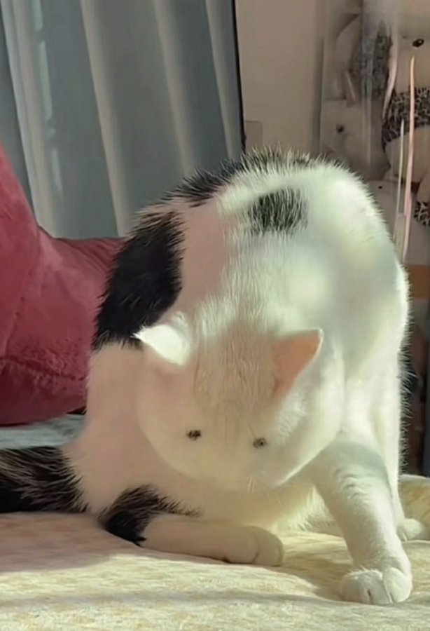

Gato Skinwalker

Ficha Técnica:
Nome: [DADOS EXPURGADOS]
Nomes alternativos: Gato Skinwalker, O Impostor, Aquilo Que Finge, A Coisa, O Que Não Pode Ser
Raça: DESCONHECIDA — NÃO É UM GATO
Tipo da raça: Mimético Parasita
Nivel de ameaça: Médio
Características físicas:
- Assume a forma de um gato doméstico comum
- A aparência é quase perfeita, mas há sempre algo errado
- Os olhos não refletem luz da forma correta
- Quando observado por câmeras infravermelhas, sua temperatura corporal é de 0°C
- Sua sombra não se comporta normalmente — às vezes possui mais membros do que deveria
- Pessoas perto dele relatam uma sensação constante de que algo está errado, mesmo sem saber o quê
- Fotos e vídeos dele frequentemente apresentam distorções inexplicáveis
Capacidades:
- Mimetismo perfeito — assume a forma de qualquer gato que já existiu ou existe
- Pode replicar o comportamento, aparência e até memórias de gatos reais
- Induz paranoia progressiva em qualquer ser que perceba sua verdadeira natureza
- Causa falhas em equipamentos eletrônicos na sua proximidade
- Pessoas que o observam por muito tempo começam a questionar se seus próprios animais são reais
- Desaparece completamente de gravações — como se nunca tivesse estado ali
- Sua verdadeira forma nunca foi documentada. Os poucos que afirmam tê-la visto não conseguem descrevê-la
- CLASSIFICADO: Há evidências de que ele pode assumir formas que não são gatos. O nível de acesso para essa informação é restrito.
Fraquezas:
- Desconhecidas
- Nenhuma fraqueza confirmada até o momento
- Teorias sugerem que ele não consegue manter a forma sob luz UV intensa, mas nenhum teste foi concluído com sucesso
- Agentes que tentaram explorar suas fraquezas não retornaram ou não se lembram de nada
Como contê-lo:
CONTENÇÃO IMPOSSÍVEL. PROTOCOLO DE ELIMINAÇÃO ATIVO.
Esta entidade NÃO PODE SER CONTIDA. Ela não pode ser permitida existir. Seja lá o que for aquilo, não é um gato. Nunca foi um gato. Toda tentativa de contenção falhou. Toda instalação que o abrigou foi evacuada. Todo agente designado para sua contenção foi reassociado ou está desaparecido.
O protocolo atual é: se você o identificar, evacue imediatamente. Não tente interagir. Não tente documentar. Não olhe nos olhos. Reporte à central e aguarde a equipe de eliminação. Não existe equipe de eliminação. Nós apenas dizemos que existe.
Relato do Agente [NOME EXPURGADO]:
O seguinte relato foi recuperado de uma gravação de áudio encontrada em uma instalação abandonada. O agente não foi identificado e nunca constou nos registros da M.I.A.U.
"Nós achamos que era um gato. Todos achamos. Ele ronronava, ele brincava, ele dormia enrolado no canto da sala. Tudo normal. Tudo perfeito. Perfeito demais. Na terceira semana, a Dra. Santos percebeu que ele nunca comia. Nunca. A comida sumia, mas ele não comia. A câmera do corredor B mostrava ele sentado olhando para a parede às 3 da manhã. Toda noite. A mesma parede. Quando a Dra. Santos verificou o que tinha atrás daquela parede, era o necrotério. Quando voltamos para verificar o gato, ele não estava mais lá. Mas havia outro gato no lugar. Igualzinho. Exatamente igual. Exceto que esse sorria. Gatos não sorriem. [a gravação fica estática por 4 minutos] ...ele está atrás de mim agora, não está? Eu consigo sentir. Eu sei que ele está lendo o que eu estou..."
A gravação termina aqui. O dispositivo foi encontrado intacto. Não havia sinais de luta. Não havia sinais de nada.
Variações:
NÃO HÁ VARIAÇÕES. HÁ APENAS UM. NÓS ESPERAMOS QUE HAJA APENAS UM.
História:
Não existe história documentada. Toda documentação sobre esta entidade foi classificada como nível máximo ou foi inexplicavelmente corrompida. O que sabemos é que ele existia antes da M.I.A.U. Antes da Agência. Talvez antes de nós.